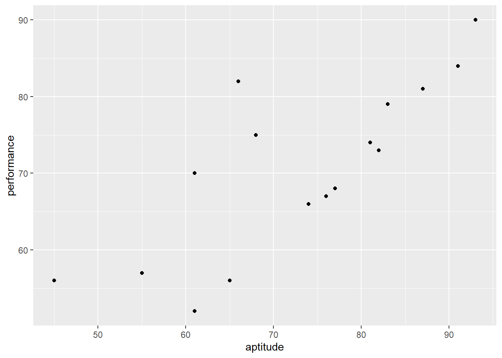
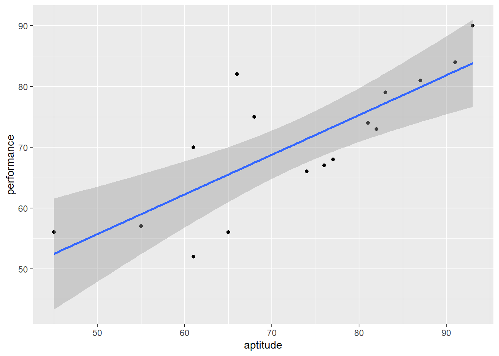
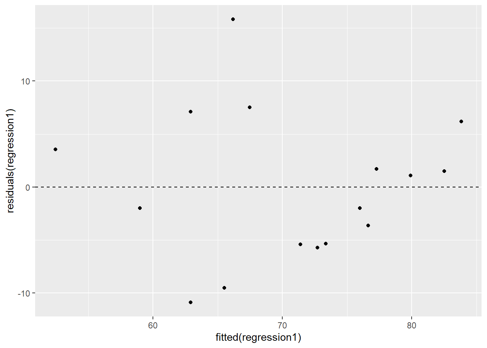
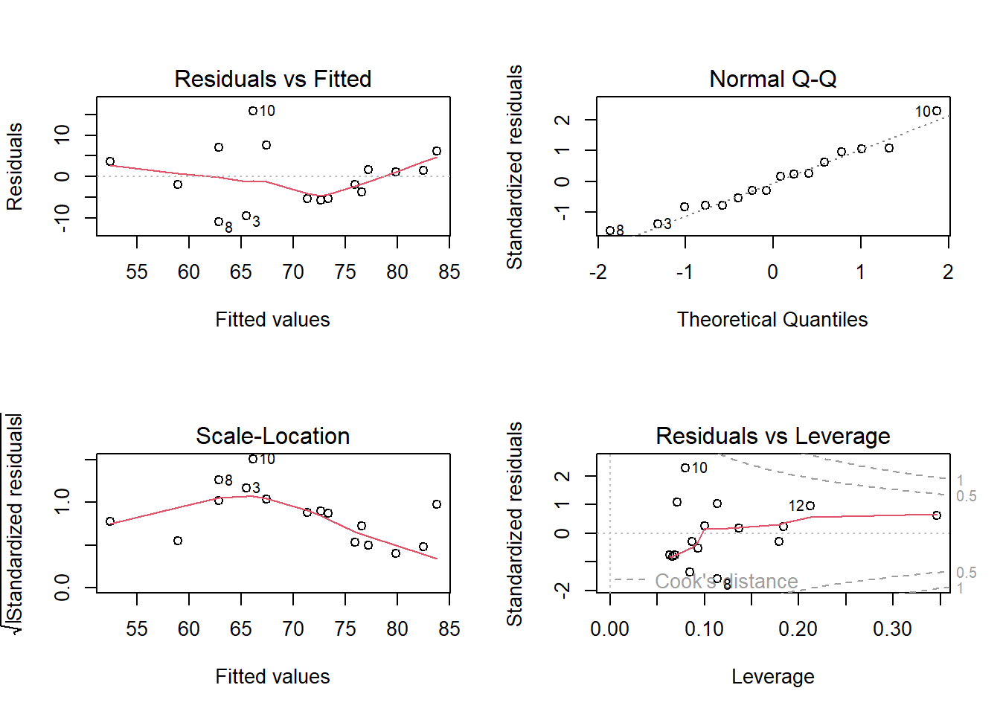
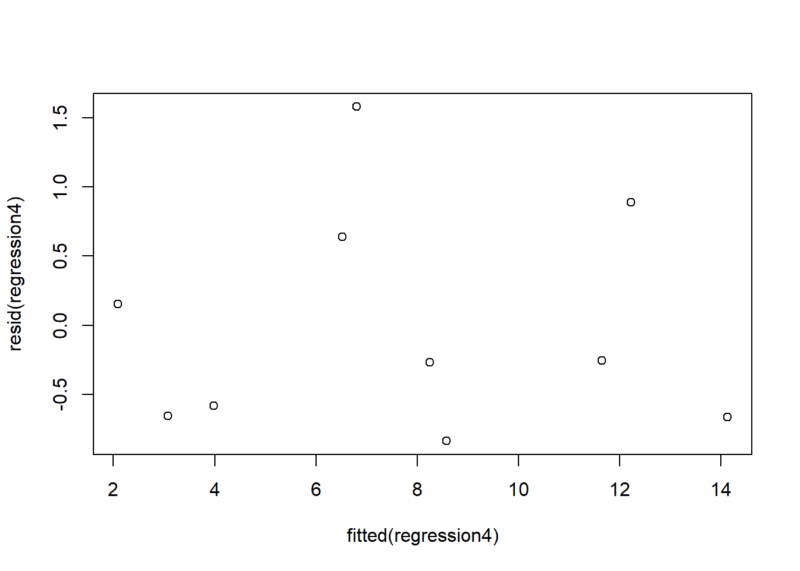
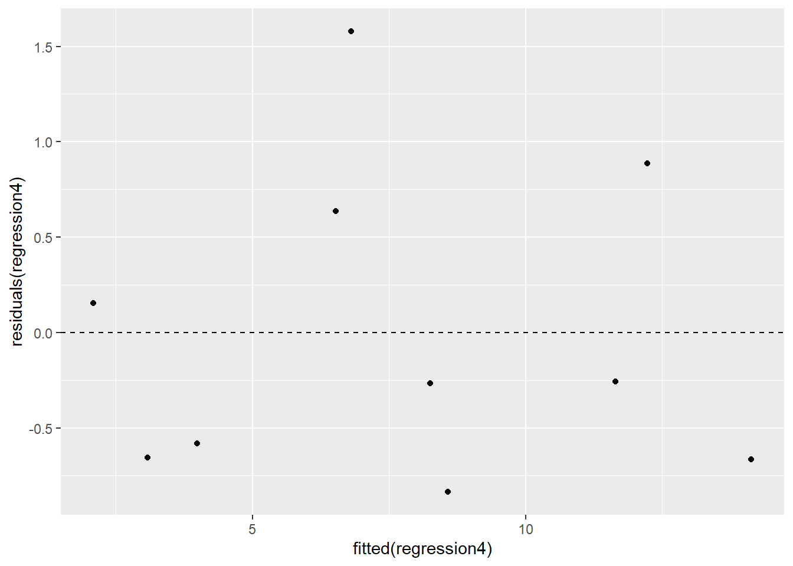

#Load Tidyverse
library(tidyverse)
#load dplyr
library(dplyr)
#load ggplot2
library(ggplot2)Correlation analysis and Regression analysis in R
CORRELATION ANALYSIS
We can use a scatterplot to get a visualization of if and how two variables appear to/tend to “move” together or not.
Remember that the correlation coefficient measures the magnitude (small, zero, large), strength (weak, non-existent, strong) and direction (negative, flat, positive) of an assumed linear relationship between two numeric variables.
Note that you still need to calculate the correlation coefficient to check correlation regardless of what a scatterplot shows you
Lets build a scatterplot for two variables: performance on the vertical axis and aptitude on the horizontal axis
Example 1: Working with aptitude and performance score/data
#Variables
aptitude <-c(45,81,65,87,68,91,77,61,55,66,82,93,76,83,61,74)
performance <-c(56,74,56,81,75,84,68,52,57,82,73,90,67,79,70,66)
#Create a data frame
corr_data <-data.frame(aptitude,performance)
corr_data aptitude performance
1 45 56
2 81 74
3 65 56
4 87 81
5 68 75
6 91 84
7 77 68
8 61 52
9 55 57
10 66 82
11 82 73
12 93 90
13 76 67
14 83 79
15 61 70
16 74 66#Build scatterplot with ggplot
ggplot(corr_data, aes(x=aptitude, y=performance))+
geom_point()
The ggplot suggests that the two variables tend to “move” together. The visual suggests that performance and aptitude have a possible positive correlation.
We must still confirm the correlation via a calculation of the correlation coefficient as follows:
cor(corr_data) aptitude performance
aptitude 1.0000000 0.7827927
performance 0.7827927 1.0000000Since the performance-aptitude correlation coefficient is 0.78, we can say that performance and aptitude have a strong positive correlation (positive linear relationship).
OR
We say that performance and aptitude are strongly positively correlated variables for the data we have
Types of Correlation Coefficient
We can compute three kinds of correlation coefficient
Pearson correlation coefficient: measures the strength of a linear relationship between two numeric variables
Kendall correlation coefficient: measures correlation for ranked data
Spearman correlation coefficient: measures correlation for monotonic relationships
Note that R, by default, computes Pearson correlation coefficient
Example 2: Working with aptitude, performance and personality scores
aptitude <-c(45,81,65,87,68,91,77,61,55,66,82,93,76,83,61,74)
performance <-c(56,74,56,81,75,84,68,52,57,82,73,90,67,79,70,66)
personality <-c(9,15,11,15,14,19,12,10,9,14,15,14,16,18,15,12)
#Create a data frame
corr_data <-data.frame(aptitude,performance, personality)
corr_data aptitude performance personality
1 45 56 9
2 81 74 15
3 65 56 11
4 87 81 15
5 68 75 14
6 91 84 19
7 77 68 12
8 61 52 10
9 55 57 9
10 66 82 14
11 82 73 15
12 93 90 14
13 76 67 16
14 83 79 18
15 61 70 15
16 74 66 12#Build scatterplot with ggplot
ggplot(corr_data, aes(x=aptitude, y=performance))+
geom_point()The ggplot suggests that the two variables tend to “move” together. The visual suggests that performance and aptitude have a possible positive correlation.
Note the following:
- A scatterplot that appears to show a positive correlation between 2 numeric variables might sometimes conflict with the value of your correlation coefficient
Your correlation coefficient might not always agree with your scatterplot. So always try to present both your scatterplot and Correlation coefficient.
- A positive (or negative) correlation coefficient for 2 numeric variables does not mean there is a statistically significant relationship between the two variables. You have to run a regression (and test hypothesis) between the two variables to confirm this (i.e you have to reject the null to confirm that a statistically significant relationship exists between the two variables)
Testing Hypothesis about Correlation measures
A scatterplot is a graphical way of showing a (possible/potential) relationship between two numeric variables
The correlation coefficient between two variables indicates the strength, sign, and direction of the linear relationship between the variables.
The correlation coefficient we typically compute is for a sample dataset - hence its called the sample correlation coefficient.
We might want to extend the analysis to see if what holds in the sample holds in the population
Beyond the actual value of the correlation coefficient, two kinds of questions are important in connection with the sample correlation coefficient value we obtain:
- Is a correlation coefficient greater than 0 for the two numeric variables in the population?
- Are two correlation coefficients different from each other in the population?
Case 1:Is a correlation between two variables greater than 0 in the population?
We can go beyond just computing the value of the sample correlation coefficient and test the null hypothesis that the population correlation coefficient is equal to zero versus the alternative hypothesis that the population correlation coefficient is greater than zero
Suppose there is a claim that the true/population correlation between two variables (e.g. aptitude and performance) is positive before you obtain sample data per variable
We can test the following
Two-sided test
- \(H_0\): population correlation coefficient = 0
- \(H_1\): population correlation coefficient <> 0 (two-sided test)
One-sided test
- \(H_0\): population correlation coefficient = 0
- \(H_1\): population correlation coefficient > 0 (one-sided test)
One-sided test
- \(H_0\): population correlation coefficient = 0
- \(H_1\): population correlation coefficient < 0 (one-sided test)
We can compute the correlation coefficient for 2 variables in a multi-variable data frame using the following code syntax
with(corr_data, cor(aptitude, performance))[1] 0.7827927We can build out a correlation matrix for all the numeric variables in our data frame, corr_data - use the cor() function
cor(corr_data) aptitude performance personality
aptitude 1.0000000 0.7827927 0.7499305
performance 0.7827927 1.0000000 0.7709271
personality 0.7499305 0.7709271 1.0000000We see the correlation coefficient between aptitude and performance is 0.783
Note that the correlation matrix confirms that every variable has a perfect positive correlation (i.e. +1) with itself
we can also use cor() to compute the three kinds of correlation coefficient:
- Pearson
- Spearman
- Kendall
cor(corr_data, method = "pearson") aptitude performance personality
aptitude 1.0000000 0.7827927 0.7499305
performance 0.7827927 1.0000000 0.7709271
personality 0.7499305 0.7709271 1.0000000cor(corr_data, method = "spearman") aptitude performance personality
aptitude 1.0000000 0.7673049 0.7051817
performance 0.7673049 1.0000000 0.6694386
personality 0.7051817 0.6694386 1.0000000cor(corr_data, method = "kendall") aptitude performance personality
aptitude 1.0000000 0.6386555 0.5795050
performance 0.6386555 1.0000000 0.4917012
personality 0.5795050 0.4917012 1.0000000Testing whether two correlation coefficients are same for two numeric variables in the population
This is also the same as testing the difference between two correlation coefficients
- Two-sided test that two coefficients are similar/equal to each other (i.e. difference = 0)
- \(H_0\): population correlation coefficient 1 = population correlation coefficient 2
- \(H_1\): population correlation coefficient 1 <> population correlation coefficient 2 (two sided test)
Let statistical significance (alpha) = 5% (0.05)
If you compute two sample correlation coefficients, you can test if those values are similar in the population or if their difference is equal to zero
We use the package psych, which contains the r.test() function to perform this test
#install.packages("psych")
library("psych")The syntax for the r.test() function is as follows:
r.test(coefficient 1, sample size 1, coefficient 2, sample size 2)Example 1
Suppose we draw aptitude and performance data from two groups of consultants from a population and we want to confirm whether or not the population/true aptitude-performance correlations for these two groups are similar per the overall population from which the two groups were created from
G1_corr = .783
G2_corr = .695
sample_size1 = 16
sample_size2 = 20
\(H_0\): G1_corr = G2_corr in the population
\(H_1\): G1_corr <> G2_corr in the population
\(\alpha = 5\)% (0.05)
r.test(r12 = .783, n=16, r34 = .695, n2=20, twotailed = TRUE)Correlation tests
Call:r.test(n = 16, r12 = 0.783, r34 = 0.695, n2 = 20, twotailed = TRUE)
Test of difference between two independent correlations
z value 0.53 with probability 0.6The r.test() function uses r12 as holder for the first correlation coefficient and r34 as holder for the second correlation coefficient
Note n for sample size 1 and n2 for sample size 2
The Z value (0.53) is the test statistic
The p-value (0.6) is greater than the chosen alpha, so we fail to reject the null hypothesis.
We conclude that there is evidence in favor of the null hypothesis. The true/population correlation coefficients are similar/equal.
Calculating & visualizing correlation matrices
We can produce correlation matrices for a multi-variable data frame as follows:
#Variables
aptitude <-c(45,81,65,87,68,91,77,61,55,66,82,93,76,83,61,74)
performance <-c(56,74,56,81,75,84,68,52,57,82,73,90,67,79,70,66)
personality <-c(9,15,11,15,14,19,12,10,9,14,15,14,16,18,15,12)
#Create a data frame
(corr_data <-data.frame(aptitude,performance, personality)) aptitude performance personality
1 45 56 9
2 81 74 15
3 65 56 11
4 87 81 15
5 68 75 14
6 91 84 19
7 77 68 12
8 61 52 10
9 55 57 9
10 66 82 14
11 82 73 15
12 93 90 14
13 76 67 16
14 83 79 18
15 61 70 15
16 74 66 12We can produce a visual of correlation matrices for a multi-variable data frame as follows:
pairs(corr_data) #produces a visual 
cor(corr_data) #produces a number matrix aptitude performance personality
aptitude 1.0000000 0.7827927 0.7499305
performance 0.7827927 1.0000000 0.7709271
personality 0.7499305 0.7709271 1.0000000The pairs() function produces a visual correlation matrix.
The cor() function produces the correlation matrix.
REGRESSION ANALYSIS USING R
We study two cases of regression analysis:
- Case 1: Simple linear regression (SLR), where only two variables are involved to check variable associations and to make predictions
- Case 2: Multiple linear regression (MLR), where more than two variables are involved to check variable associations and to make predictions
CASE 1: SIMPLE LINEAR REGRESSION IN R
Today we discuss simple linear regression (SLR) and how to implement it in R
Recall that the key tasks in statistics are:
- Descriptive statistics - describing data
- Inferential statistics - inferring insights from data and data analysis
One of the main things statisticians do is to examine relationships between variables (mainly numeric) to see if:
- There is an association between those variables
- You can use one variable to predict the other variable
Regression is the technique/procedure to check for variable associations and make predictions
To check variable associations, we test the null hypothesis that the variables have no relationship between them versus the alternative hypothesis that there is a relationship between them i.e. for a given significance level:
- \(H_0\): the coefficient of independent variable = 0
- \(H_1\): the coefficient of independent variable <> 0
If you reject \(H_0\), we say:
- the coefficient of the independent variable is statistically significant
- There is a statistically significant relationship between the dependent and independent variable
To check for a statistically significant relationship between two numeric variables, you need to do the following (after checking for correlation):
- Agree a theory or philosophy for what you are doing - regression analysis only makes sense in the context of an existing theory or philosophy
- Determine your target/outcome/predicted variable
- Determine your independent/predictor variable
- Steps 2 and 3 above are to be guided by your theory in Step 1 above
- Gather data, write out your null and alternative hypotheses
- Select your alpha
- Setup your data the right way
- Run the regression function on your data
- Write your finding/result - based on the p-value you get
- Write your conclusion - based on your finding/result in Step 9
- Write your model - for statistically significant relationships only
- Interpret your model
- Perform diagnostics on assumptions of the SLR
- Use your model for predictions
To use one variable to predict the other, we use a mathematical model certified as the statistically significant relationship between two variables to make those predictions. Typically, this model is established when we have been able to reject the null hypothesis.
In the SLR case we are looking for the best-fitting line through a 2-Dimensional scatterplot.
The best fitting plane is the one that has the least/minimum sum of squared residuals (SSR)
Example 1: Simple linear regression analysis for aptitude and performance
Suppose there is a theory that aptitude determines performance in any field of endeavor (i.e. higher aptitude is associated with higher performance) we can check if there is statistical evidence that this is true using data and regression analysis.
Suppose you have the following data showing measurements for the variables aptitude and performance for 16 consultants on a hiring test
aptitude <-c(45,81,65,87,68,91,77,61,55,66,82,93,76,83,61,74)
performance <-c(56,74,56,81,75,84,68,52,57,82,73,90,67,79,70,66)Checking for a statistically significant association between aptitude and performance means that we test the hypothesis:
- \(H_0\): \(\beta_1 = 0\) (There is no statistically significant relationship between aptitude and performance)
- \(H_1\): \(\beta_1\) <> \(0\) (there is a statistically significant relationship between aptitude and performance)
Lets use \(\alpha\) of 5% (0.05) - meaning we are OK with rejecting a true null hypothesis 5% of the time (i.e committing a Type 1 error)
We need to put the vectors into a data.frame before we
- perform regression analysis to check for association between them and
- if we get a statistical model, we can use it to make predictions
consultant_data <-data.frame(aptitude, performance)We use the lm() function to build a SLR model and test for association between the variables
regression1 <-lm(performance ~ aptitude, data=consultant_data)Use the summary() function to produce the results of your regression - and extract the p-value for the test, so we can make the decision to reject or fail to reject the null hypothesis
summary(regression1)
Call:
lm(formula = performance ~ aptitude, data = consultant_data)
Residuals:
Min 1Q Median 3Q Max
-10.9036 -5.3720 -0.4379 4.2111 15.8281
Coefficients:
Estimate Std. Error t value Pr(>|t|)
(Intercept) 23.0299 10.2732 2.242 0.041697 *
aptitude 0.6537 0.1389 4.707 0.000337 ***
---
Signif. codes: 0 '***' 0.001 '**' 0.01 '*' 0.05 '.' 0.1 ' ' 1
Residual standard error: 7.249 on 14 degrees of freedom
Multiple R-squared: 0.6128, Adjusted R-squared: 0.5851
F-statistic: 22.15 on 1 and 14 DF, p-value: 0.0003368Finding/result
the p-value (0.0003368) < alpha (0.05). So we reject the null hypothesis
Conclusion
Since we reject the null hypothesis, there is evidence in favor of the alternative hypothesis
i.e. there is evidence that since beta1 is not statistically equal to zero there is a statistically significant relationship between performance and aptitude
we can also extract only parts of the information stored in regression1
1. Extract coefficients only and write your model using those coefficients
coefficients(regression1)(Intercept) aptitude
23.029869 0.653667 Note also the following:
- F-statistic
- R-squared
2. Extract coefficients + confidence intervals
confint(regression1) 2.5 % 97.5 %
(Intercept) 0.9961369 45.0636002
aptitude 0.3558034 0.95153073. Testing the linear model assumptions
The simple linear regression (SLR) model places the following assumptions on the data set that we should try to verify before we proceed with any statistical inference.
- the linear model is appropriate to represent the relationship
- we use a residual plot to decide this
- the error distribution should be normally distributed
- we use the residual histogram or preferably a quantile-normal plot (Normal Q-Q plot) to investigate if a normal assumption is appropriate
- for the quantile-normal plot (Normal Q-Q plot), deviations from a straight line indicate non-normality
- In addition to normality, an assumption of the linear model is that the error terms have a common variance.
- When this is the case, a residual plot will show residual points scattered without a pattern around a horizontal line
4. Making predictions with our model
Since we have a statistically significant relationship, we can adopt the model and use it to make some predictions.
The value of linear regression is that it gives you the ability to predict next values for the dependent variable.
R provides a function - predict() - to make predictions of values for the dependent variable, given a value for the independent variable
Given the value 34 for aptitude (independent variable), what prediction does our model offer for performance (dependent variable)?
#predict only one dependent variable value from one given value for the independent variable
predict(regression1, data.frame(aptitude=c(34))) 1
45.25455 Note you have to create a data frame that holds the given independent variable value
#predict two dependent variable values
predict(regression1, newdata=data.frame(aptitude=c(34,33))) 1 2
45.25455 44.60088 #predict sixteen dependent variable values
predict(regression1, newdata=data.frame(aptitude=c(34,33,45,23,45,46,45,79,86,99,86,25,26,55,57,59))) 1 2 3 4 5 6 7 8
45.25455 44.60088 52.44489 38.06421 52.44489 53.09855 52.44489 74.66956
9 10 11 12 13 14 15 16
79.24523 87.74291 79.24523 39.37154 40.02521 58.98156 60.28889 61.59622 5. Confidence in the predicted values
The confidence interval argument in the predict() function helps us gauge the uncertainty in the predictions
predict(regression1, data.frame(aptitude=c(34,33,45,23,45,46,45,79,86,99,86,25,26,55,57,59)), interval='confidence') fit lwr upr
1 45.25455 33.05781 57.45128
2 44.60088 32.12145 57.08031
3 52.44489 43.29406 61.59571
4 38.06421 22.72622 53.40220
5 52.44489 43.29406 61.59571
6 53.09855 44.21648 61.98062
7 52.44489 43.29406 61.59571
8 74.66956 70.36791 78.97122
9 79.24523 73.71918 84.77129
10 87.74291 79.02785 96.45796
11 79.24523 73.71918 84.77129
12 39.37154 24.60907 54.13402
13 40.02521 25.54987 54.50055
14 58.98156 52.40448 65.55863
15 60.28889 54.18223 66.39555
16 61.59622 55.93632 67.25612lwr and upr refer to lower and upper values/bounds for the confidence interval around the predictions
So for the predicted performance value of 45.25 (for the given aptitude value of 34), we can infer that the prediction is likely to lie between a lwr (lower limit) of 33.05 and upr (upper limit) 57.45
We use the confidence intervals to check the accuracy of our predictions.
6. Visualize the scatterplot and regression line for your model
Use the following R code to see what your model looks like
ggplot(consultant_data, aes(x=aptitude, y=performance))+
geom_point()+
geom_smooth(method=lm)
the first line shows where the data comes from
the second line plots points in the graph
the third line specifies a geom function that adds the regression line (as indicated by the method=lm argument)
7. Plotting the residuals - to show if the relationship between the independent and dependent variables is really a linear one or not
When doing regression analysis, it is a good idea to plot the residuals against the predicted values.
If the residuals form a random pattern around a horizontal line at zero, there is evidence in favor of a linear relationship between the independent and dependent variables.
Example: ggplot to show residual plot
ggplot(regression1, aes(x=fitted(regression1), y=residuals(regression1)))+
geom_point()+
geom_hline(yintercept=0, linetype="dashed")
fitted(regression1) retrieves the predicted values
residuals(regression1) retrieves the residuals
geom_point() plots points
geom_hline() plots the dashed horizontal line whose y-intercept is 0
The pattern of residuals around the line is evidence consistent with a linear model
Example: Four Diagnostic charts for linear model assumptions
We can also use the following 4 charts to diagnose for normality and also to check if the statistical relationship is actually linear or if a linear model is appropriate to represent the statistical relationship.
par(mfrow=c(2,2)) #set a 2 by 2 grid to plot diagnostic charts on 4 panes
plot(regression1) # plot the diagnostic charts
the linear model is appropriate if the scatterplot of residuals does NOT show any pattern around the horizontal dashed line
The assumption of normality of error terms hold if there is little or no deviation from the straight line in the Q-Q plot
In addition to normality, an assumption of the linear model is that the error terms have a common variance.
- When this is the case, a residual plot will show residual points scattered without a pattern around a horizontal dashed line
Example : Association between heights of parents and their kids
Tall parents are, in theory, assumed to produce tall kids. Is this true?
Can we expect:
- a statistically significant relationship to exit between the heights of parents and that of their kids?
- If #1 above is true, be able to predict a kid’s height using a given parent’s height?
We can collect data about parents and their kids height (in inches) to test the following:
\(H_0\): \(\beta_1 = 0\) (there is no statistically significant relationship between parent height and child height)
\(H_1\): \(\beta_1\) <> \(0\) (there is a statistically significant relationship between parent height and child height)
\(\alpha = 1\)% (0.01)
kid_height <-c(39,30,32,34,35,36,36,30)
parent_height <-c(71,63,63,67,68,68,70,64)
#Form data frame:
height_data <-data.frame(kid_height,parent_height)Decide which variable is outcome/dependent variable and which is independent variable
- Dependent variable:
kid_height - Independent variable:
parent_height
Run regression function lm()
regression2 <-lm (kid_height ~ parent_height, data=height_data)
#produce summary information about regression
summary(regression2)
Call:
lm(formula = kid_height ~ parent_height, data = height_data)
Residuals:
Min 1Q Median 3Q Max
-1.3518 -0.5741 -0.2222 0.8241 1.6111
Coefficients:
Estimate Std. Error t value Pr(>|t|)
(Intercept) -30.2778 9.0358 -3.351 0.015403 *
parent_height 0.9630 0.1352 7.120 0.000386 ***
---
Signif. codes: 0 '***' 0.001 '**' 0.01 '*' 0.05 '.' 0.1 ' ' 1
Residual standard error: 1.111 on 6 degrees of freedom
Multiple R-squared: 0.8942, Adjusted R-squared: 0.8765
F-statistic: 50.7 on 1 and 6 DF, p-value: 0.000386Finding/result
the p-value (0.000386) is less than alpha (0.01). So we reject the null hypothesis
Conclusion
Since we reject the null hypothesis, there is evidence in favor of the alternative hypothesis. There is evidence of a statistically significant relationship between kid_height and parent_height
Write out the model - using the coefficients you estimated above.
kid_height = intercept + slope * parent_height
Interpret the model you have written above
#predict the height values for two kids with parent height values of 74 and 77 inches
predict(regression2, data.frame(parent_height=c(74,77))) 1 2
40.98148 43.87037 Example : Does number of bedrooms determine the price of a house?
There is a theory that the more bedrooms a house has, the more expensive it is? Is this true?
CASE 2: MULTIPLE LINEAR REGRESSION (MLR) MODEL IN R
Multiple linear regression (MLR) involves most of the same procedure for simple linear regression.
MLR involves working with one dependent variable and two or more independent variables
The other key difference between SLR and MLR is you interpret the relationship between your two variables of interest while keeping any other independent variables equal or constant.
Furthermore, the standard error of estimates should decrease from SLR to MLR. Since MLR uses more information than SLR, it decreases the error
MLR enables you do the following:
Check for the existence or otherwise of a statistically significant relationship between a dependent variable and an independent variable while in the presence of other independent variables
If you find a statistically significant relationship from #1 above, use your linear model to estimate what happens to the dependent variable when the independent variable increased by 1 unit.
If you find a statistically significant relationship from #1 above, use your linear model for prediction.
Example 1
Suppose we have personality scores in addition to aptitude and performance scores we worked with in the SLR case above:
aptitude_score <-c(45,81,65,87,68,91,77,61,55,66,82,93,76,83,61,74)
performance_score <-c(56,74,56,81,75,84,68,52,57,82,73,90,67,79,70,66)
personality_score <-c(9,15,11,15,14,19,12,10,9,14,15,14,16,18,15,12)Suppose there is a theory that there is no relationship between consultant performance and aptitude given (or while accounting for) consultant personality. How do we check this?
We look for a statistically significant relationship between aptitude and performance by regressing performance on aptitude and add personality as a control variable
MLR involves looking for the best-fitting plane through a 3-Dimensional scatterplot
The best fitting plane is the one that has the least/minimum sum of squared residuals
We create a data frame with the vectors above
(consultant_data2 <-data.frame(aptitude_score,performance_score,personality_score)) aptitude_score performance_score personality_score
1 45 56 9
2 81 74 15
3 65 56 11
4 87 81 15
5 68 75 14
6 91 84 19
7 77 68 12
8 61 52 10
9 55 57 9
10 66 82 14
11 82 73 15
12 93 90 14
13 76 67 16
14 83 79 18
15 61 70 15
16 74 66 12To explore for the performance-aptitude relationship while accounting for personality we test the following hypothesis:
- \(H_0\): \(\beta_1 = 0\)
- \(H_1\): \(\beta_1\) <> \(0\)
Lets choose \(\alpha = 10\)% (0.1)
The regression equation is specified as follows:
lm(dependent_variable ~ independent_variable + control_variable, data = data frame)You may choose to store your results in a variable - and use summary() to report the results
regression3 <-lm(performance_score ~ aptitude_score + personality_score, data=consultant_data2)Produce summary report on regression
summary(regression3)
Call:
lm(formula = performance_score ~ aptitude_score + personality_score,
data = consultant_data2)
Residuals:
Min 1Q Median 3Q Max
-8.689 -2.834 -1.840 2.886 13.432
Coefficients:
Estimate Std. Error t value Pr(>|t|)
(Intercept) 20.2825 9.6595 2.100 0.0558 .
aptitude_score 0.3905 0.1949 2.003 0.0664 .
personality_score 1.6079 0.8932 1.800 0.0951 .
---
Signif. codes: 0 '***' 0.001 '**' 0.01 '*' 0.05 '.' 0.1 ' ' 1
Residual standard error: 6.73 on 13 degrees of freedom
Multiple R-squared: 0.69, Adjusted R-squared: 0.6423
F-statistic: 14.47 on 2 and 13 DF, p-value: 0.0004938How to read results in a MLR summary report
Check for F-statistics and its p-value
- \(H_0\): \(\beta_0 = \beta_1 = \beta_2 = 0\)
- \(H_1\): at least one beta <> 0
Conduct individual parameter t-test versus p-value
Check R-squared for indication of prediction power of your overall model
Finding/Result
Note results that are not statistically significant - the accompanying variables may be excluded from the model
Write the generic equation for the regression plane:
performance = intercept + slope1 * aptitude + slope2 * personality
Note that high F-values and low p-values are indicators that the regression plane is a good fit for the scatter plot
Write your conclusion
Making predictions with your model
predict(regression3, data.frame(aptitude_score=c(85,62),personality_score=c(14,17))) 1 2
75.98742 71.82924 Example 2: Using synthetic data
While we can work with real-world data, note we can also use simulated data for regression analysis as follows:
set.seed(2)
x <-1:10 # create variable x with values from 1 to 10
y <-rchisq(10,3) # create 10 values with a Chi-square distribution and 3 degrees of freedom
z <-1 + x + y + rnorm(10) # create variable z (which holds 10 values/observations)Suppose our goal is to examine the relationship between z and x, controlling/accounting for y (i.e holding y fixed)
Let alpha = 1%(0.01)
regression4 <-lm(z~ x + y)
summary(regression4)
Call:
lm(formula = z ~ x + y)
Residuals:
Min 1Q Median 3Q Max
-0.8361 -0.6359 -0.2611 0.5164 1.5786
Coefficients:
Estimate Std. Error t value Pr(>|t|)
(Intercept) 0.4619 0.6206 0.744 0.4810
x 1.0555 0.1247 8.467 6.34e-05 ***
y 0.9374 0.2902 3.230 0.0144 *
---
Signif. codes: 0 '***' 0.001 '**' 0.01 '*' 0.05 '.' 0.1 ' ' 1
Residual standard error: 0.9064 on 7 degrees of freedom
Multiple R-squared: 0.9624, Adjusted R-squared: 0.9517
F-statistic: 89.67 on 2 and 7 DF, p-value: 1.028e-05F-Stat = ? ; F-Stat p-value = ?
p-value for coefficient on x = ?
p-value for coefficient on y = ?
R-squared for model = ?
Note that simulated data might not give the same results every time you run the model except you use set.seed() function
Plot residual chart to examine (1) homoskedasticity and (2) if a linear model is appropriate
Use Base R
plot(fitted(regression4), resid(regression4))
OR use ggplot
ggplot(regression4, aes(x=fitted(regression4), y=residuals(regression4)))+
geom_point()+
geom_hline(yintercept=0, linetype="dashed")
The residual plot appears to confirm (1) and (2) above
Example 3:Using real-world data from the web
# Install the key packages
install.packages("readxl")
install.packages("tidyverse")
install.packages("readr")#Load the key packages
library(readxl)
library(tidyverse)
library(readr)
library(dplyr)Read data from the web.
Citation: Verbeek, Marno (2004)
air_quality <-read_csv("https://vincentarelbundock.github.io/Rdatasets/csv/Ecdat/Airq.csv")
glimpse(air_quality)Rows: 30
Columns: 7
$ rownames <dbl> 1, 2, 3, 4, 5, 6, 7, 8, 9, 10, 11, 12, 13, 14, 15, 16, 17, 18…
$ airq <dbl> 104, 85, 127, 145, 84, 135, 88, 118, 74, 104, 64, 75, 131, 12…
$ vala <dbl> 2734.4, 2479.2, 4845.0, 19733.8, 4093.6, 1849.8, 4179.4, 2525…
$ rain <dbl> 12.63, 47.14, 42.77, 33.18, 34.55, 14.81, 45.94, 39.25, 42.36…
$ coas <chr> "yes", "yes", "yes", "no", "yes", "no", "yes", "no", "yes", "…
$ dens <dbl> 1815.86, 804.86, 1907.86, 1876.08, 340.93, 335.52, 315.78, 36…
$ medi <dbl> 4397, 5667, 15817, 32698, 6250, 4705, 7165, 4472, 2658, 33885…We can examine if at 5% significance level, there is a statistically significant relationship between air quality (airq) and amount of rain (rain), keeping population density (dens) constant
This is a MLR situation/case
air_regressionMLR <-lm(airq ~ rain + dens, data=air_quality)
summary(air_regressionMLR)
Call:
lm(formula = airq ~ rain + dens, data = air_quality)
Residuals:
Min 1Q Median 3Q Max
-46.984 -24.871 8.916 22.542 59.943
Coefficients:
Estimate Std. Error t value Pr(>|t|)
(Intercept) 1.073e+02 1.568e+01 6.844 2.37e-07 ***
rain -5.377e-02 3.995e-01 -0.135 0.894
dens -3.834e-04 1.906e-03 -0.201 0.842
---
Signif. codes: 0 '***' 0.001 '**' 0.01 '*' 0.05 '.' 0.1 ' ' 1
Residual standard error: 29.02 on 27 degrees of freedom
Multiple R-squared: 0.002184, Adjusted R-squared: -0.07173
F-statistic: 0.02955 on 2 and 27 DF, p-value: 0.9709We see that the F-statistic’s p-value (0.9709) is greater than our alpha (0.05). So all the coefficients are jointly statistically equal to zero.
Suppose we want to examine if at 5% significance level, there is a statistically significant relationship between air quality (airq) and amount of rain without accounting for population density (dens)
This is a SLR situation
air_regressionSLR <-lm(airq ~ rain, data=air_quality)
summary(air_regressionSLR)
Call:
lm(formula = airq ~ rain, data = air_quality)
Residuals:
Min 1Q Median 3Q Max
-46.648 -24.679 9.367 21.734 60.303
Coefficients:
Estimate Std. Error t value Pr(>|t|)
(Intercept) 106.6662 15.0895 7.069 1.09e-07 ***
rain -0.0545 0.3926 -0.139 0.891
---
Signif. codes: 0 '***' 0.001 '**' 0.01 '*' 0.05 '.' 0.1 ' ' 1
Residual standard error: 28.51 on 28 degrees of freedom
Multiple R-squared: 0.0006878, Adjusted R-squared: -0.035
F-statistic: 0.01927 on 1 and 28 DF, p-value: 0.8906What about testing the theory that density negatively affects air quality at 5% significance level? We can use the SLR below to examine that.
air_regressionSLR2 <-lm(airq ~ dens, data=air_quality)
summary(air_regressionSLR2)
Call:
lm(formula = airq ~ dens, data = air_quality)
Residuals:
Min 1Q Median 3Q Max
-46.051 -24.248 8.847 22.365 59.937
Coefficients:
Estimate Std. Error t value Pr(>|t|)
(Intercept) 1.054e+02 6.128e+00 17.195 <2e-16 ***
dens -3.857e-04 1.872e-03 -0.206 0.838
---
Signif. codes: 0 '***' 0.001 '**' 0.01 '*' 0.05 '.' 0.1 ' ' 1
Residual standard error: 28.5 on 28 degrees of freedom
Multiple R-squared: 0.001514, Adjusted R-squared: -0.03415
F-statistic: 0.04246 on 1 and 28 DF, p-value: 0.8382Note that the variable dens has the expected sign but is not statistically significant at 5%.
Also note that if we were testing for a relationship at 10% significance level, the variable dens would be statistically significant
%Session Info%
sessionInfo()R version 4.2.2 (2022-10-31 ucrt)
Platform: x86_64-w64-mingw32/x64 (64-bit)
Running under: Windows 10 x64 (build 19045)
Matrix products: default
locale:
[1] LC_COLLATE=English_United States.utf8
[2] LC_CTYPE=English_United States.utf8
[3] LC_MONETARY=English_United States.utf8
[4] LC_NUMERIC=C
[5] LC_TIME=English_United States.utf8
attached base packages:
[1] stats graphics grDevices utils datasets methods base
other attached packages:
[1] readxl_1.4.3 psych_2.3.6 lubridate_1.9.2 forcats_1.0.0
[5] stringr_1.5.0 dplyr_1.1.2 purrr_1.0.1 readr_2.1.4
[9] tidyr_1.3.0 tibble_3.2.1 ggplot2_3.4.2 tidyverse_2.0.0
loaded via a namespace (and not attached):
[1] tidyselect_1.2.0 xfun_0.39 splines_4.2.2 lattice_0.20-45
[5] colorspace_2.1-0 vctrs_0.6.3 generics_0.1.3 htmltools_0.5.5
[9] yaml_2.3.7 mgcv_1.8-41 utf8_1.2.3 rlang_1.1.1
[13] pillar_1.9.0 glue_1.6.2 withr_2.5.0 bit64_4.0.5
[17] lifecycle_1.0.3 munsell_0.5.0 gtable_0.3.3 cellranger_1.1.0
[21] htmlwidgets_1.6.2 evaluate_0.21 labeling_0.4.2 knitr_1.43
[25] tzdb_0.4.0 fastmap_1.1.1 curl_5.0.1 parallel_4.2.2
[29] fansi_1.0.4 scales_1.2.1 vroom_1.6.3 jsonlite_1.8.4
[33] bit_4.0.5 farver_2.1.1 mnormt_2.1.1 hms_1.1.3
[37] digest_0.6.33 stringi_1.7.12 grid_4.2.2 cli_3.6.1
[41] tools_4.2.2 magrittr_2.0.3 crayon_1.5.2 pkgconfig_2.0.3
[45] Matrix_1.6-0 timechange_0.2.0 rmarkdown_2.23 rstudioapi_0.15.0
[49] R6_2.5.1 nlme_3.1-160 compiler_4.2.2